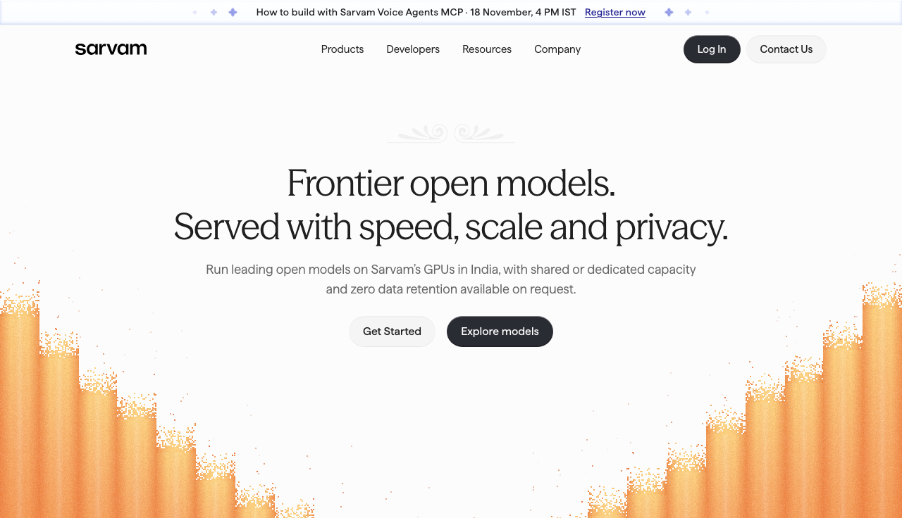
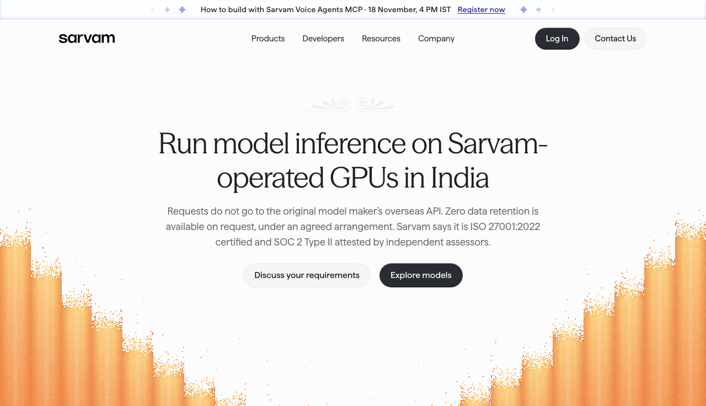

| Part | Baseline | Variant |
|---|---|---|
| H1 | Frontier open models. Served with speed, scale and privacy. | Run model inference on Sarvam-operated GPUs in India |
| Sub-line | Run leading open models on Sarvam’s GPUs in India, with shared or dedicated capacity and zero data retention available on request. | Requests do not go to the original model maker’s overseas API. Zero data retention is available on request, under an agreed arrangement. Sarvam says it is ISO 27001:2022 certified and SOC 2 Type II attested by independent assessors. |
| Button | Get Started | Discuss your requirements (goes to: contact) |